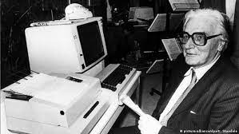
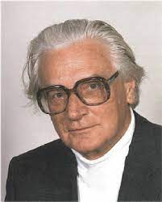

Konrad Zuse
Eerste computers
Konrads leven
Zuse studeerde in Berlijn vanaf 1927 werktuigbouwkunde, en haalde zijn diploma in 1935. Na zijn studie werkte hij bij Henschel Flugzeugwerke, alwaar hij als ingenieur veel vergelijkingen moest oplossen, dit vond hij naar eigen zeggen ontzettend saai. Na een jaar stopte hij bij Henschel om aan zijn eigen rekenmachine te werken. In 1938 voltooide Zuse de Z1, de eerste programmeerbare rekenmachine ter wereld. Deze werkte nog geheel mechanisch, maar wel binair. In 1939 volgde de Z2, een proefmodel dat bestond uit het mechanische geheugen van de Z1, een kaartlezer, en een uit tweehonderd relais opgebouwde processor.
Konrad Zuse
Konrad Zuse (Berlijn, 22 juni 1910 - Hünfeld, 18 december 1995) was een Duitse computerpionier die de eerste computers ter wereld bouwde. Zijn Z4-computer was na de oorlog geruime tijd de enige computer op het vasteland van Europa. Toch kreeg Zuse lange tijd niet de eer die hem toekomt.
Popular Posts
-
.jpg) Na de 2e wereldoorlog
Na de 2e wereldoorlog
-

Persoonlijk leven
-

Externe links